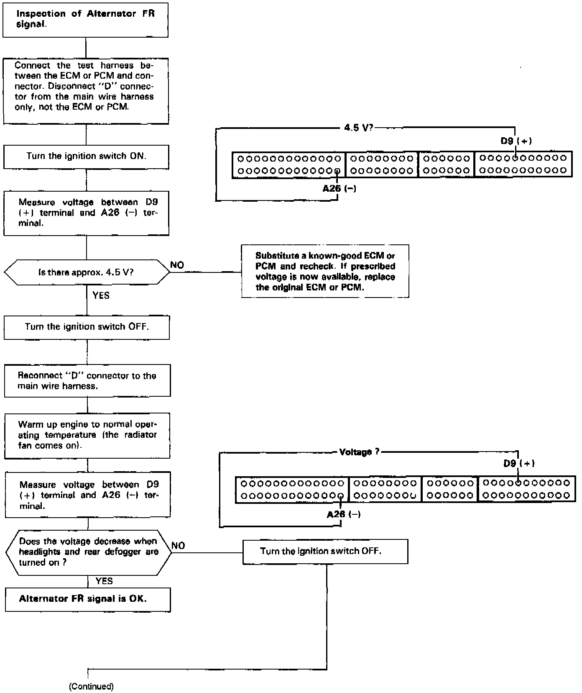
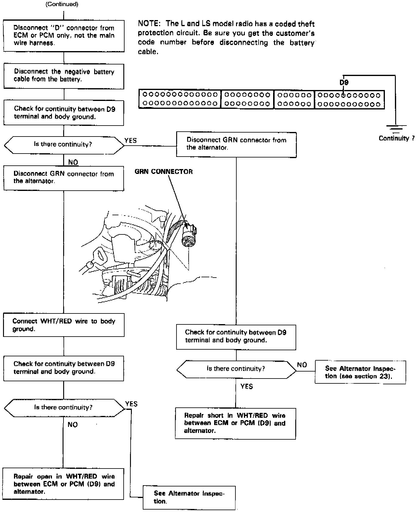

Alternator FR Signal Circuit Troubleshooting


This signals the ECM (Engine Control Module) or PCM (Powertrain Control Module) when the Alternator (ALT) is charging.
NOTE:
The L and LS model radio has a coded theft protection circuit. Be sure you get the customer's code number before disconnecting the battery cable.